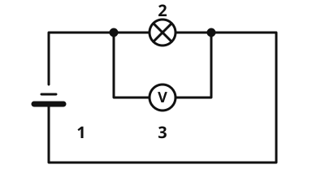

Die Spannung
Die Idee
Warum fließt in einem Stromkreis überhaupt Strom? Die Batterie treibt ihn an, so wie eine Pumpe das Wasser im Kreis antreibt. Wie stark sie antreibt, sagt die Spannung. Ohne Antrieb fließt nichts, auch wenn der Kreis geschlossen ist. Wie beim Wasserbild gilt: Das Bild erklärt, hat aber Grenzen.
Das merkst du dir
- Spannung
Die Spannung gibt an, wie stark die Stromquelle den Strom antreibt. Sie hat das Formelzeichen und wird in Volt (V) gemessen.
- Voltmeter
Ein Voltmeter misst die Spannung. Du schließt es parallel an: mit beiden Anschlüssen an den beiden Enden des Bauteils, an dem du messen willst.
Typische Spannungen: - Mignonzelle (AA-Batterie): 1,5 V - Flachbatterie: 4,5 V - Autobatterie: 12 V - Steckdose: 230 V

Das Voltmeter liegt parallel zur Lampe: Es misst die Spannung an der Lampe. Beschriftung: 1 Batterie, 2 Lampe, 3 Voltmeter.
Quelle: https://github.com/lernapps/elektrizitaet. Lizenz: CC0-1.0.Auch ohne Strom
Zwischen den Polen einer Batterie liegt auch dann Spannung, wenn der Stromkreis offen ist. Strom fließt aber nur im geschlossenen Kreis.
Sicherheit
Experimentiere nur mit Batterien, nie mit der Steckdose: 230 V sind lebensgefährlich.
Beispiel
Zwei Mignonzellen
In einer Taschenlampe liegen zwei Mignonzellen hintereinander. Jede hat 1,5 V, zusammen treiben sie den Strom mit 3 V an. Ein Voltmeter an den beiden Enden der beiden Zellen zeigt 3 V.
Übung
Lösung
Parallel zur Lampe, mit beiden Anschlüssen an den Enden der Lampe. richtige Antwort
Die Spannung gibt es zwischen zwei Punkten, hier den beiden Enden der Lampe.
In Reihe mit der Lampe, mitten im Kabel.
So wird ein Voltmeter nicht eingebaut. Das ist die Art, wie man ein Amperemeter anschließt.
Nur an einen Pol der Batterie.
Spannung misst man immer zwischen zwei Punkten. Mit nur einem Anschluss gibt es nichts zu messen.
Ein Voltmeter liegt parallel zu dem Bauteil, an dem du die Spannung messen willst.
Mehr dazu:
Lösung
Richtige Antwort: Die Aussage stimmt.
Die Spannung gibt es zwischen den Polen, auch im offenen Stromkreis. Strom fließt nur, wenn der Kreis geschlossen ist.
Mehr dazu:
Lösung
Richtige Antwort: Mignonzelle (AA-Batterie) – 1,5 V; Flachbatterie – 4,5 V; Autobatterie – 12 V; Steckdose – 230 V
Eine Mignonzelle hat 1,5 V, eine Flachbatterie 4,5 V, eine Autobatterie 12 V und die Steckdose 230 V.
Mehr dazu: